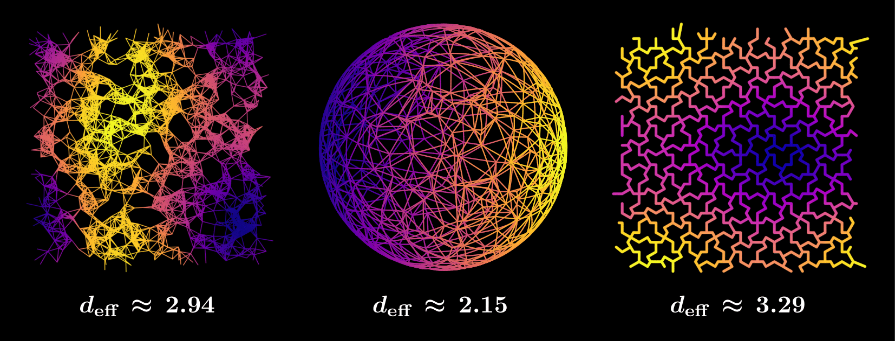

Summary
Biological transport networks—such as blood vessels, plant vasculature, or neuronal networks—are naturally modeled as metric graphs where edges carry flow or diffusive signals and nodes enforce conservation laws. These high-density networks encode effective material and functional properties. To investigate how these properties emerge, we develop a continuum-limit framework that replaces edgewise differential equations with a coarse-grained partial differential equation (PDE) defined on the continuous space occupied by the network. This framework captures how real-world, space-filling networks operate simultaneously across system-wide and local scales, using the continuum as a feature.

The derivation naturally introduces an edge-conductivity tensor, an edge-capacity function, and a vertex number density, which together describe how each microscopic patch of the graph contributes to macroscopic behavior. All macroscopic parameters are computed from first principles via a systematic discrete-to-continuous homogenization, revealing an anomalous effective embedding dimension arising from the homogenized diffusivity $d_{\text{eff}}$.
Preprint
